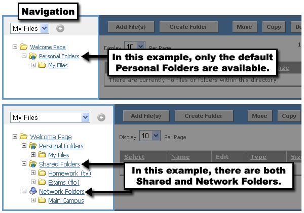
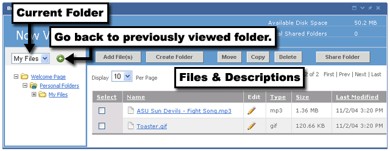

The Briefcase Portlet allows individuals to maintain a personal set of folders and files. It also provides portfolio capabilities by allowing a user to share folders and their contents with other portal users.
Upon viewing the Briefcase Portlet for the first time, you will see the welcome screen from the image below. At this point, you need to decide which of your folders you want to view. Choose either Personal, Personal LDAP Folders, Shared, or Network folders. The options enabled may vary for your institution.
Navigating Around the Briefcase
Once you enter the briefcase, the Personal Folders screen can be broken up into two parts. On the left is the folder navigation, and on the right are the contents within the selected folder. Within the navigation area, by default, you will see links to the Welcome Page (which takes you back to the Welcome screen above), your Personal Folders, and the My Files folder. If someone has already Shared Folders with you, or if you have Peronal LDAP Folders or Network Folders already enabled, those will be listed beneath your Personal Folders.

Viewing Contents of a Folder
To view the contents of any folder (Personal, Personal LDAP,Shared, or Network), click the name of the folder in the left navigation area. You can also expand the folder tree to see subfolders by clicking on the plus (+) button to the left of the folder icon. The current folder will always be displayed in the drop-down list at the top of the navigation area. Within the Files and Description area, click on the arrow icon in the Name column to sort the list by file name.
